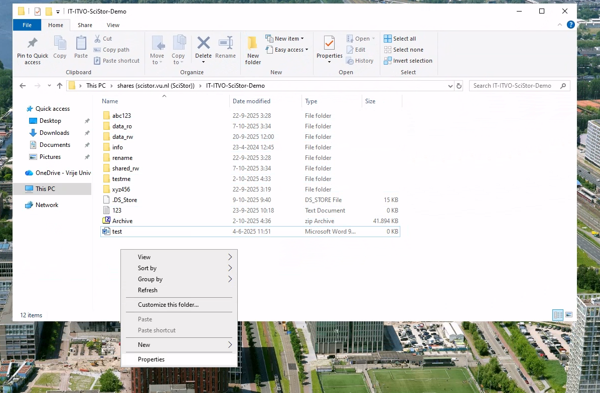
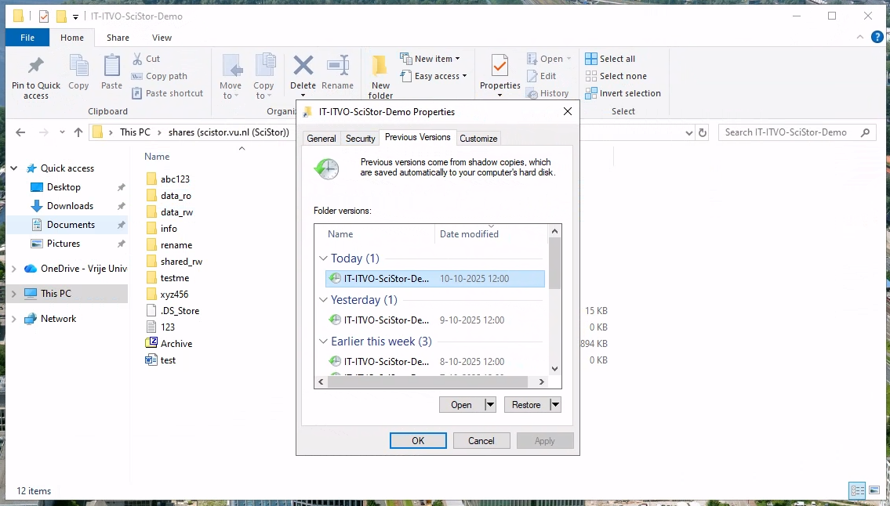
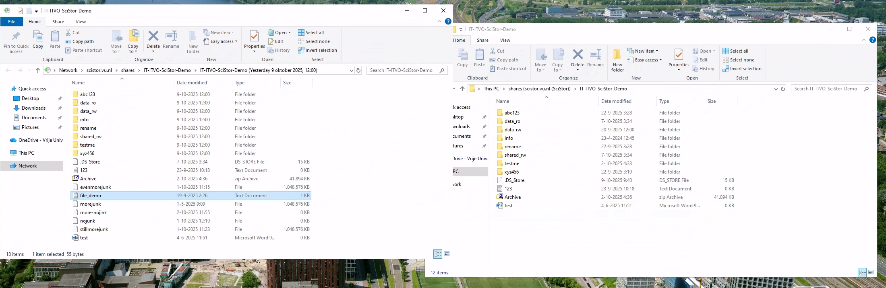
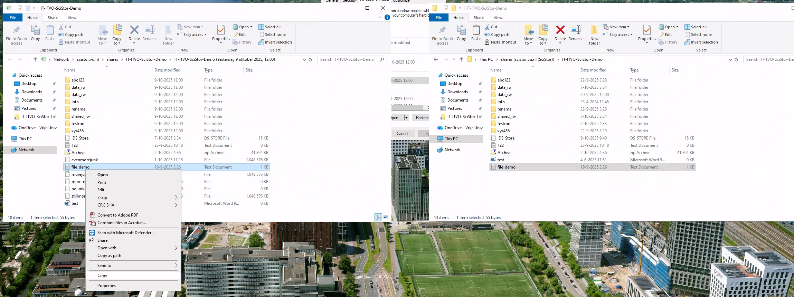

Data Recovery
Overview
If you’ve lost or accidentally modified a file, SciStor Snapshots can help you restore it quickly and easily. This guide provides step-by-step instructions for restoring files on Windows, macOS, and Linux.
Need assistance? If you’re unable to recover the file yourself, contact the IT for Research (ITvO) team:
Windows (Difficulty: Easy)
If you don’t have access to a Windows machine, connect to Azure Virtual Desktop (AVD) and follow the instructions for mounting a share in Windows.
Steps to Restore a File
Locate the folder where your deleted or modified file was stored.
Right-click in the folder window and select Properties. 
In the Properties dialog, navigate to the “Previous Versions” tab.
Select the snapshot date from which you want to retrieve the file. 
A new File Explorer window will open, showing the files from that point in time. 
Copy or drag the file back to your current folder. 
The file has been restored! You can now close the Previous Versions window.
macOS (Difficulty: Intermediate)
For macOS users, you’ll need to use the command line (Terminal). If this seems too complicated, you can use Azure Virtual Desktop (AVD) and follow the Windows instructions instead.
Prerequisites
Mount SciStor in Finder using ⌘+K.
The path depends on how you mounted SciStor:
If you mounted
smb://scistor.vu.nl/shares, navigate to/Volumes/shares/<share-name>If you mounted
smb://scistor.vu.nl/shares/<share-name>, navigate to/Volumes/<share-name>
Steps to Restore a File
- Open Terminal and navigate to your mounted share:
cd /Volumes/IT-ITVO-Scistor-Demo- Verify your deleted file is missing:
ls
# Output: 123.txt abc123 Archive.zip data_ro data_rw info rename shared_rw test.doc testme xyz456- Navigate to the hidden
.snapshotfolder:
cd .snapshotThis folder is protected and cannot be listed with ls -la or accessed through Finder, even with ⌘+G.
- List available snapshots:
ls
# Output: auto.28851 auto.29982 auto.31962 auto.32805 auto.33083 auto.33361 auto.33638 auto.33918 auto.34198 auto.34479- Navigate to the most recent snapshot (the last one in the list):
cd auto.34479
ls
# Output shows your deleted file: file_demo.txt- Restore the file using rsync:
rsync -rtlHOi file_demo.txt ../../.
# Output: >f+++++++ file_demo.txt- Verify the restoration:
cd ../../
ls
# Your file is now restored!Be aware that IT-ITVO-Scistor-Demo is a share used to write this documentation, please replace this with your own share.
Linux (Difficulty: Intermediate)
Linux works similarly to macOS, but the mount path depends on where you choose to mount your share. This example uses the Stepstone server (sftp.data.vu.nl).
Steps to Restore a File
- Connect via SSH:
ssh vunetId@sftp.data.vu.nl- Navigate to your share:
cd /research/IT-ITVO-SciStor-Demo- Verify your file is missing:
ls
# Output: 123.txt abc123 Archive.zip data_ro data_rw info rename shared_rw test.doc testme xyz456- Navigate to the
.snapshotfolder:
cd .snapshot/- View available snapshots (you can use tab completion):
cd auto.
# Tab completion shows: auto.28851/ auto.29982/ auto.31962/ auto.32805/ auto.33083/ auto.33361/ auto.33638/ auto.33918/ auto.34198/ auto.34479/- Enter the most recent snapshot:
cd auto.34479/- Restore the file using rsync:
rsync -rtlHOi file_demo.txt ../../.
# Output: >f+++++++++ file_demo.txt- Verify the restoration:
cd ../../
ls
# Your file is now restored!Be aware that IT-ITVO-Scistor-Demo is a share used to write this documentation, please replace this with your own share.
Tips & Best Practices
- Snapshots are read-only: You cannot modify files within the
.snapshotfolder. - Most recent snapshot: The snapshot with the highest number is typically the most recent.
- Multiple snapshots: You can browse different snapshots to find the version of your file you need.
- Entire folders: You can restore entire directories using the same rsync method.
- Location of Snapshots: Snapshots are always in the top level share, subshares contain empty snapshots.
Still Need Help?
Contact IT for Research (ITvO) team.